COURSE 02 · DESIGN
Studio Basics
把監看需求轉成清楚、正確且可維護的 Display；善用樣本、底板、圖庫與 RWD 版面，讓同一份設計在大屏、桌機與手機都好用。
Studio 設計人員建議 120 分鐘先備：Course 00、01對應 VisoLink 1.4.0-beta
LEARNING OUTCOMES
完成後，能從空白或樣本建立可驗證的畫面
01規劃與建立
確認使用者、裝置與任務；從空白或 Display 樣本建立 Display。
02編排畫布
設定畫布，使用 Symbol、圖庫與智慧圖形、圖層與排列完成配置。
03重用設計
以 Symbol 樣本、Display 底板統一外觀，修改一次、多處更新。
04多裝置交付
製作 RWD 版面，儲存、預覽並從 Runtime 使用情境完成驗收。
WORKSPACE
Studio 由六個主要操作區組成
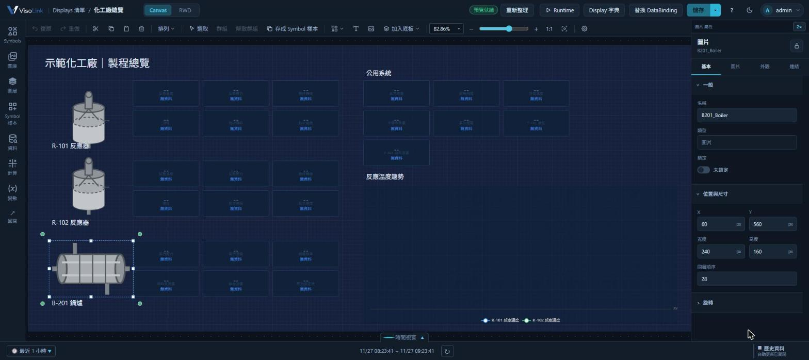
「化工廠總覽」的編輯畫面：上方可切換 Canvas／RWD；左側切換功能面板；右側顯示所選物件的屬性。- 標題列Canvas／RWD、預覽資料、Runtime、Display 字典、替換 DataBinding、儲存與「?」。
- 工具列復原、剪貼、排列、群組、存成 Symbol 樣本、加入底板、縮放與畫布設定。
- 左側面板Symbols、圖庫、圖層、Symbol 樣本、資料、計算、變數、回寫。
- 畫布、屬性與時間列配置物件、調整屬性，設定預覽資料的時間範圍。
BEFORE YOU DRAW
不要從放元件開始，先回答四個問題
設計原則：先定義使用者要回答的問題，再決定需要哪些 Symbol；不要用元件種類反推畫面內容。
DISPLAY SETUP
建立 Display：從「空白」或 Display 樣本開始
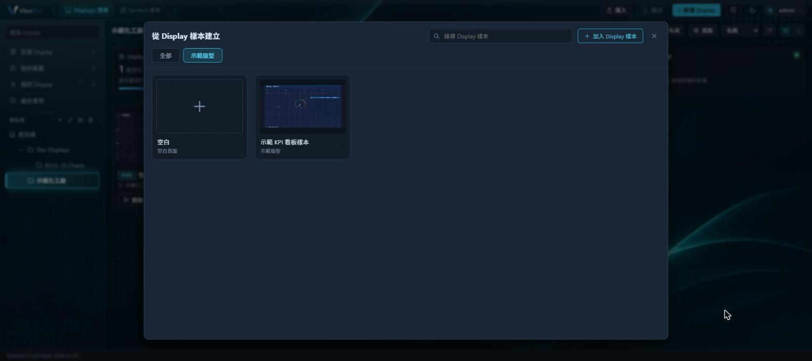
「＋新增 Display」開啟「從 Display 樣本建立」：「空白」與已加入的樣本並列，上方標籤依分類篩選。- 選擇資料夾先選取要放置的 Folder，或「根目錄」。
- 選空白或樣本樣本帶入物件、版面、動畫設定、文字和底板。
- 命名反映區域、設備與用途，避免 Test1。
- 建立直接進入 Studio；從樣本建立的資料綁定是空的，需自己綁定。
建議命名形式：區域－設備／產線－用途，例如「A區－空壓機－運轉總覽」。
DISPLAY SAMPLES
把好用的 Display 加入成樣本，讓團隊從同一套版型開始
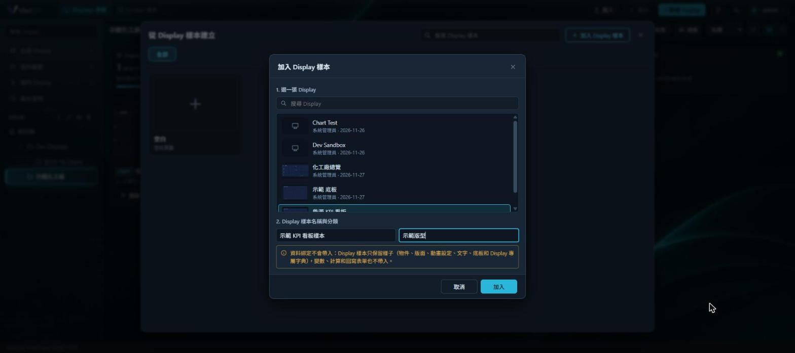
步驟 1 選一張 Display，步驟 2 輸入樣本名稱與分類；資料綁定、變數、計算與回寫表單不會帶入。- 加入樣本「＋新增 Display」→ 右上「加入 Display 樣本」。
- 選來源與分類例如分類「示範版型」，點「加入」。
- 維護樣本卡片「⋯」：編輯、編輯資訊、權限、刪除。
- 獨立副本樣本之後再修改，已建立的 Display 不會跟著變。
CANVAS
畫布尺寸決定設計基準，顯示模式決定觀看方式
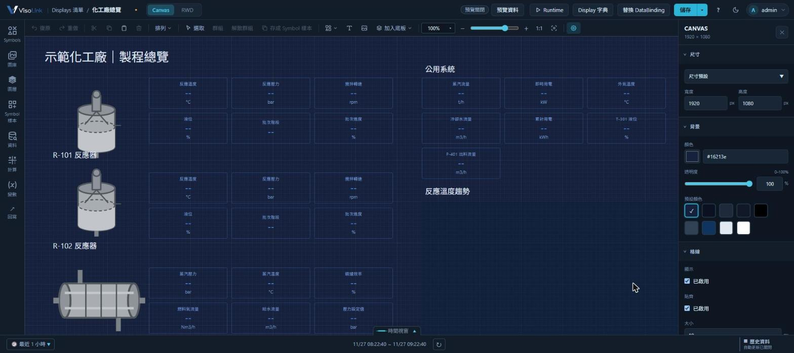
先取消選取再點工具列最右側 ⚙；CANVAS 面板分成尺寸、背景、格線三區。- 從「尺寸預設」選擇或自訂寬高；建議收到內容大小
- 背景顏色與透明度需與文字、狀態顏色有足夠對比
- 使用格線與貼齊建立一致的對齊基準
- 用「1:1」或「符合」檢查畫布
- 手機與平板請另外製作 RWD 版面，不要只靠縮放
EDITING BASICS
先熟練選取、復原與快捷鍵，再開始大量編排
選取與多選
Shift 或 Ctrl 加入／移除；空白處拖曳框選。只是點選不會讓「儲存」變成可按。
移動與縮放
方向鍵 1 px、Shift＋方向鍵 10 px；按住 Shift 可等比例或 15 度限制；精確值在「基本」輸入。
剪貼與跨分頁
Ctrl+X／C／V、Delete；複製的物件可貼到同一瀏覽器的其他 Editor 分頁。
復原與重做
Ctrl+Z；Ctrl+Y 或 Ctrl+Shift+Z。只處理本次編輯，不取代儲存。
常見錯誤：游標停在屬性輸入框時 Ctrl+V 會貼進輸入框，請改點工具列「貼上」。跨兩套 VisoLink 搬畫面請用匯出／匯入（Course 03）。
LAYOUT & LAYERS
用工具建立一致性，用圖層精確選取
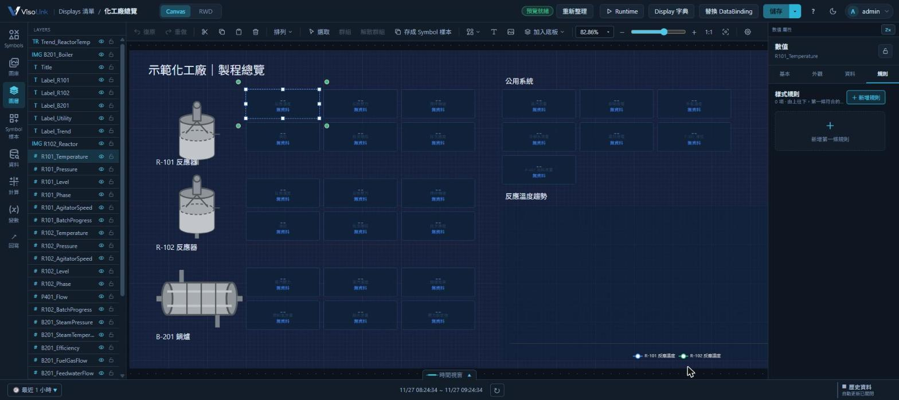
圖層面板依前後順序列出物件名稱與類型（TR 趨勢、IMG 圖片、T 文字、# 數值），並提供顯示與鎖定控制。- 兩個以上物件：靠左、置中、靠右、靠上、垂直置中、靠下
- 三個以上物件：水平或垂直平均分布
- 置於最前／向前一層／向後一層／置於最後
- 群組一起移動；「解散群組」還原
- 在圖層點名稱定位物件；眼睛控制顯示、鎖頭鎖定背景與框線
同類 KPI 卡片應具有相同尺寸、字級、間距、單位位置與狀態顏色。
SYMBOLS
Symbols 面板提供 18 種元件，依資訊問題選擇
 Symbol 分為圖形、文字與媒體、資料三類；選擇類型後在畫布拖曳出放置範圍。
Symbol 分為圖形、文字與媒體、資料三類；選擇類型後在畫布拖曳出放置範圍。圖形
矩形、橢圓、線段、弧線、多邊形。
文字與媒體
文字、圖片、iFrame。
單點資訊
數值、狀態、儀表、進度。
多筆資料
趨勢、表格、長條圖、圓餅圖、Sankey、和弦圖。
Symbol 類型建立後不直接轉換；需要更換時建立新 Symbol、重新綁定確認後，再刪除舊的。
CHOOSE WITH PURPOSE
同一份資料，可以有不同的正確呈現方式
目前是多少？
使用數值；附上名稱、單位與合理小數位。
是否正常？
使用狀態；顏色之外也要有文字或圖示。
距離門檻多遠？
使用儀表或進度；刻度與區間必須有業務依據。
如何變化與分配？
使用趨勢看時間；和弦圖、Sankey 看各單元之間的流量。
避免：為了視覺豐富同時用數值、儀表、圓餅圖顯示完全相同的資訊，卻沒有增加判讀價值。
PROPERTIES
每個 Symbol 的設定分成清楚的責任分頁
 「基本」分頁包含名稱、類型、鎖定、X／Y／寬度／高度、圖層順序與旋轉。
「基本」分頁包含名稱、類型、鎖定、X／Y／寬度／高度、圖層順序與旋轉。- 基本名稱、鎖定、位置、尺寸、層級與旋轉。
- 外觀色彩、字型、框線；顏色可輸入色碼或選「無」，背景類可用漸層。
- 資料／系列／欄位DataBinding、欄位、計算與系列設定。
- 規則依資料改變外觀；由上往下判斷，第一條符合的生效。
Course 02 先學會辨認屬性結構；完整資料綁定於 Course 03 說明。
STYLES
數值有 6 種版面、表格有 7 種樣式，先選版面再微調
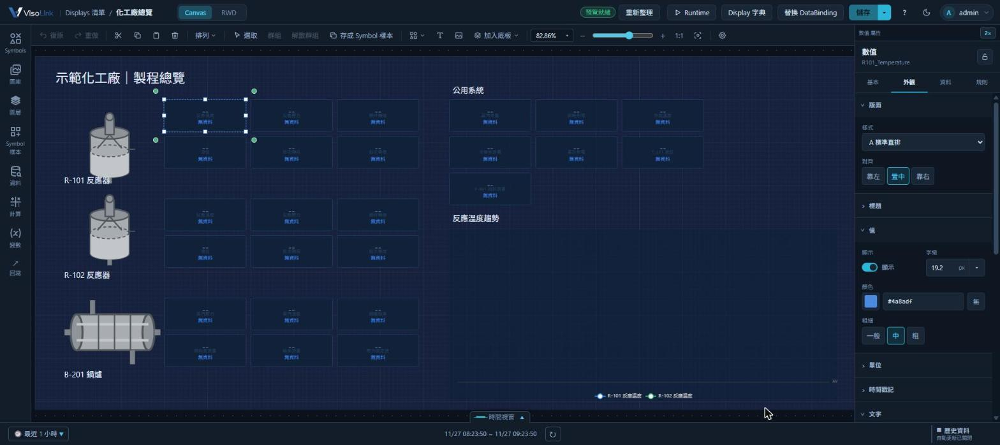
數值「外觀」分頁的「版面」可選樣式與對齊；下方分別設定標題、值、單位、時間戳記與文字。數值
A 標準直排、B 一行式、C 大數字 KPI 卡、D 精簡式、E 狀態色條卡、F 標題列卡。
表格
A 預設、B 斑馬紋、C 緊湊、D 表頭色帶、E 無框線極簡、F 卡片式列、G 格線式。
表格直接編輯
在畫布上拖曳欄寬，雙擊表頭修改標題。
一致性
同一張畫面的同類資訊使用同一種版面。
GRAPHICS LIBRARY
圖庫由伺服器統一提供，所有人看到同一份
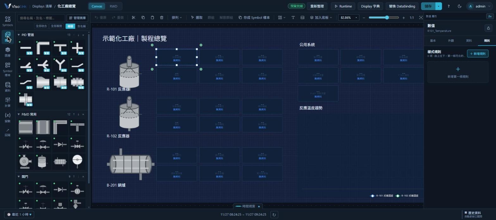
圖庫依分類列出圖形；PID 管道分類的圖形標示「智慧」。管理者可點「管理圖庫」到 Admin 圖庫管理。- 搜尋在「搜尋名稱、別名、標籤」輸入例如「反應」「熱交換」。
- 瀏覽分類PID 管道（智慧）、P&ID 常用、閥門、泵浦、儲槽、儀表、建築設施等。
- 拖入畫布建立圖片物件；靠近其他設備時自動貼合管口。
- 缺圖形時請管理者在 Admin 圖庫管理上傳或製作（Course 06）。
舊版圖庫已移除：統一使用新圖庫；不必再在個人瀏覽器整理自己的圖庫。
SMART GRAPHICS
智慧圖形：拖曳控制點改變形狀，端點自動接上設備管口
 管理者在圖庫管理看到的圖形標示「靜態」「可拉伸」「智慧」三種；Studio 中以同樣方式使用。
管理者在圖庫管理看到的圖形標示「靜態」「可拉伸」「智慧」三種；Studio 中以同樣方式使用。01拖入
從「PID 管道」等分類拖曳標示「智慧」的圖形（彎管、三通、箭頭、PID 管道）。
調整形狀
選取後拖曳黃色控制點，改變長度、角度或分支位置。
換色
外觀設定單色或漸層；多選多個智慧圖形可一次換色。
可拉伸圖形（例如直管）可沿方向拉長而不變形；靜態圖形等比例縮放。
SYMBOL SAMPLES
Symbol 樣本：一組物件存起來，在其他 Display 重複使用
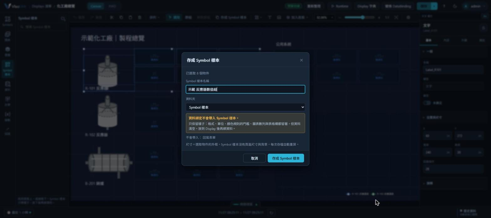
存成樣本：輸入名稱與資料夾；資料綁定與回寫表單不會帶入。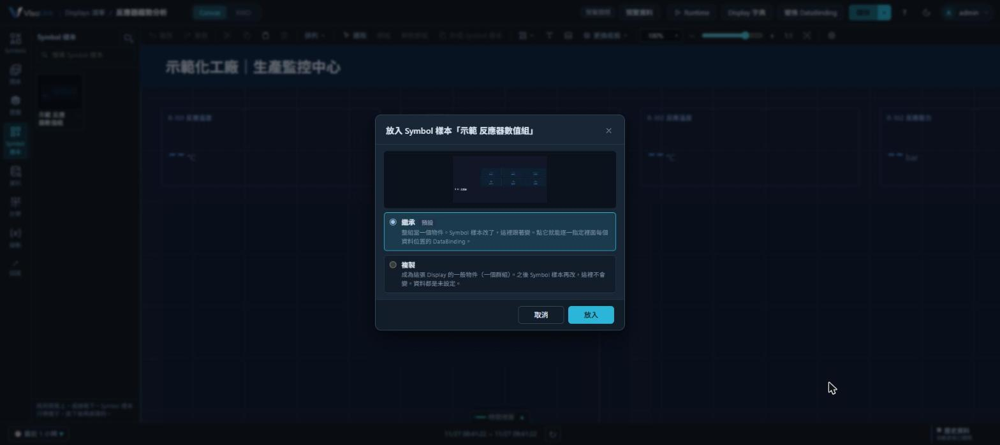
放入時選「繼承」（樣本改了這裡跟著變）或「複製」（成為一般物件群組）。- 存成樣本選取物件 → 工具列「存成 Symbol 樣本」。
- 放入左側「Symbol 樣本」拖到畫布或按兩下。
- 繼承或複製繼承保留各自的資料與文字，外觀隨樣本更新。
- 補上資料逐一指定每個資料位置的 DataBinding。
BASE LAYER
底板：Logo、標題、頁尾做一次，多張 Display 共用
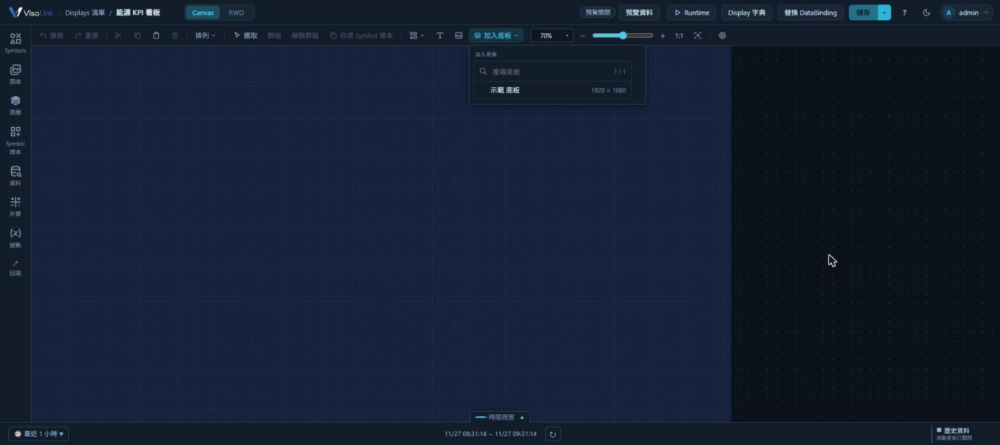
「加入底板」列出所有可作為底板的 Display 與尺寸，可搜尋。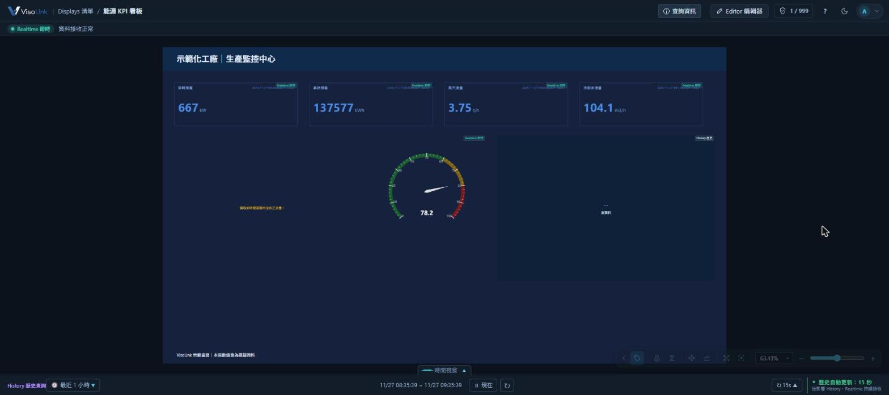
「能源 KPI 看板」套用「示範 底板」：標題列與頁尾來自底板，中間是本頁內容。- 製作底板建立 Display 放固定內容，在 Display 設定勾選「可作為底板」。
- 加入底板工具列「加入底板」；底板在圖層最下層並鎖定。
- 更換或批次「更換底板」；多張一次處理用圖面庫「加入與變更底板」。
- 修改底板開啟底板本身編輯，所有使用的頁面一起更新。
RWD LAYOUT
RWD 版面：同一張 Display 另做手機與平板用的版面
 上方切換裝置寬度（xs 手機直向～xxl 大尺寸桌機）；左側是版面元件、內容元件與 Symbol；每一列（Row）分成 12 格。圖為「從 Canvas 帶入」產生的示範版面。
上方切換裝置寬度（xs 手機直向～xxl 大尺寸桌機）；左側是版面元件、內容元件與 Symbol；每一列（Row）分成 12 格。圖為「從 Canvas 帶入」產生的示範版面。- 進入 RWD標題列點「RWD」；可「從範例開始」「從 Canvas 帶入」或「＋新增 row」。
- 放版面元件卡片、面板、摺疊、頁籤、輪播等拖到 row；Symbol 拖進容器。
- 各裝置設定位置、寬度（佔幾格）與顯示；未設定的裝置沿用較小且最接近的設定。
- 儲存與重用常用元件存成「RWD 版面樣本」；儲存後清單卡片出現「RWD」。
RWD PREVIEW
RWD 預覽：逐一切換裝置，檢查排版與文字是否被截斷
 RWD 預覽以裝置外框顯示，右上標示內容寬度與縮小比例；可切換各裝置。
RWD 預覽以裝置外框顯示，右上標示內容寬度與縮小比例；可切換各裝置。- 預覽在 RWD 編輯器點標題列「預覽」。
- 切換裝置手機、平板、桌機逐一檢查。
- 修正點「回到編輯」調整寬度或顯示。
- 實機確認點「Runtime」；手機與平板自動使用 RWD 版面。
檢查重點：從 Canvas 帶入時部分圖形會略過並提示數量；大字級標題放進卡片後要確認沒有被截掉，必要時調整字級或卡片高度。
SAVE & PREVIEW
儲存是保留設計，預覽才是驗證使用結果
 「儲存」更新目前 Display；右側「▾」提供「另外儲存」。名稱旁的圓點表示尚未儲存。
「儲存」更新目前 Display；右側「▾」提供「另外儲存」。名稱旁的圓點表示尚未儲存。1預覽資料等待「預覽就緒」
2儲存未儲存圓點消失
3Runtime確認即時值與互動
4返回修正重新儲存與複驗
預覽是歷史快照
即時資料在 Editor 預覽顯示「無資料」屬正常，請開 Runtime 確認。
例外狀態
載入、無資料、無權限與錯誤不造成誤判。
顯示裝置
固定畫布、符合螢幕、全螢幕與 RWD 都可使用。
HANDS-ON ASSESSMENT
Course 02 實作任務
建立與編排
- 從指定 Display 樣本建立 Display，並套用指定底板
- 放置標題、狀態、三項 KPI、儀表與趨勢區域，選定數值與表格樣式
- 從新圖庫拖入設備圖形，用智慧圖形管道接上管口
- 把一組 KPI 存成 Symbol 樣本，以「繼承」放入兩處
多裝置與驗證
- 以「從 Canvas 帶入」建立 RWD 版面，調整手機與平板寬度
- 在 RWD 預覽確認文字未被截斷
- 完成儲存，於 Runtime 驗證 Canvas 與 RWD
- 修改樣本外觀，確認繼承處一起更新
通過標準畫面資訊層次清楚、同類元件一致、善用樣本與底板，且在大屏與手機都能從使用者角度完成驗證。
下一門：DataBinding & DataBrowser →